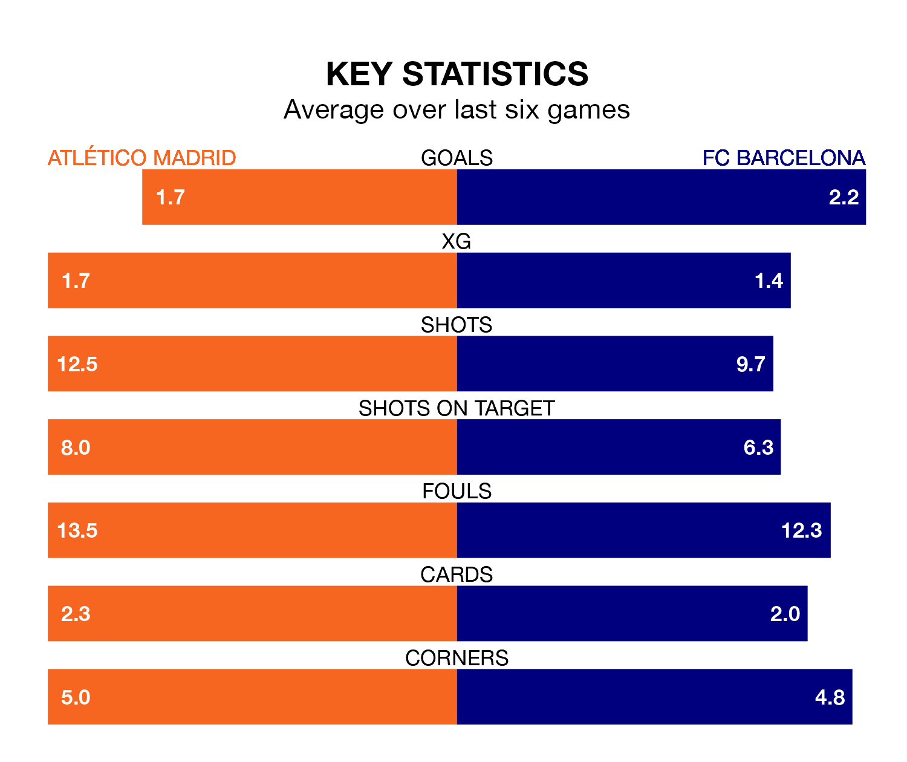

Atlético Madrid host FC Barcelona in Sunday's late match at the Estádio Cívitas Metropolitano looking to bounce back from defeat last time out in La Liga.
Atlético, who sit fourth in the league after 28 games, fell to a 2-0 away defeat to Cádiz on March 9.
They face a Barcelona side who picked up a win in their last match, a 1-0 victory against RCD Mallorca, and who sit third in the table.
With 57 goals in 28 games so far this season, Barcelona are the league's third-highest scorers with 2.0 goals per game. And they are conceding fewer than average, letting in 34 goals at a rate of 1.2 per game.
Atlético are also above average scorers, with 1.9 goals per game, compared to a league average of 1.3. They have conceded 1.1 goals per game.
In the last 10 years, Atlético and Barcelona have played each other on 29 occasions. Atlético won five of them, Barcelona 16, and they drew eight times.
On average, Atlético scored 0.9 goals and Barcelona 1.3 in those matches.
Their last meeting was on December 3, when Barcelona won 1-0 at home.
In Alvaro Morata, the hosts have one of the league's most on-form strikers so far this season. He has notched 14 goals in 25 appearances, to sit third in the scoring charts.
His goal rate of one every 120 minutes is quicker than that of Robert Lewandowski, Barça's top scorer with a goal every 172 minutes, and a total of 12 goals in 26 games.
Atlético are in mixed form in La Liga, with two wins and two draws from their last six games.
With four wins and two draws over that period, the away team's form is much better – they have taken 14 points from 18, compared to Atlético's eight.
Sunday's match will be refereed by José María Sánchez Martínez, who has taken charge of 14 La Liga games so far this season, issuing four red cards and booking 74 players. He has awarded two penalties.
The last Atlético game Sánchez Martínez refereed was a 1-1 away draw with Real Madrid on February 4. His last Barcelona match was their 1-0 win at home against Atlético Madrid on December 3.
Updated: 15:10 (UTC), 15/03/24